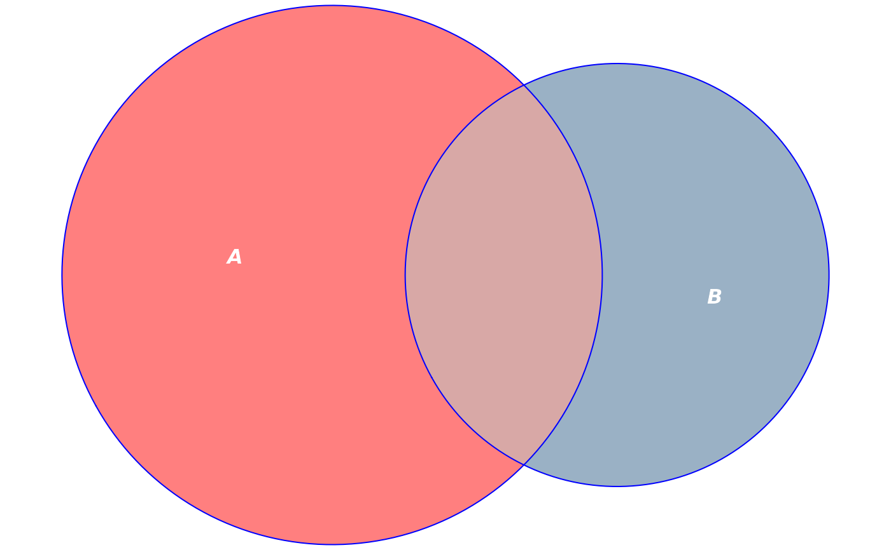
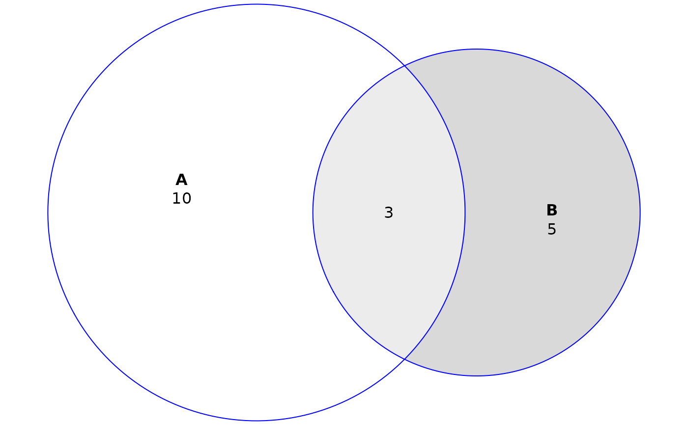
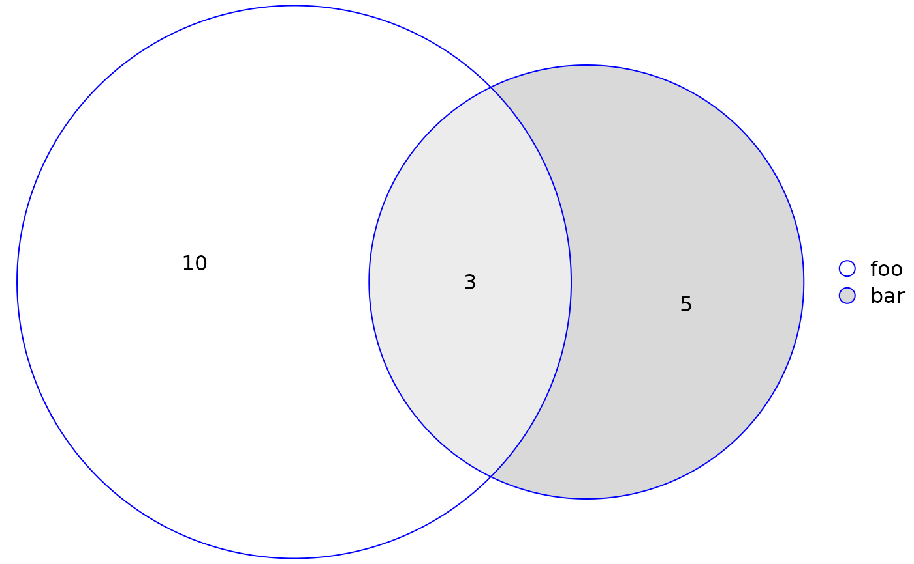
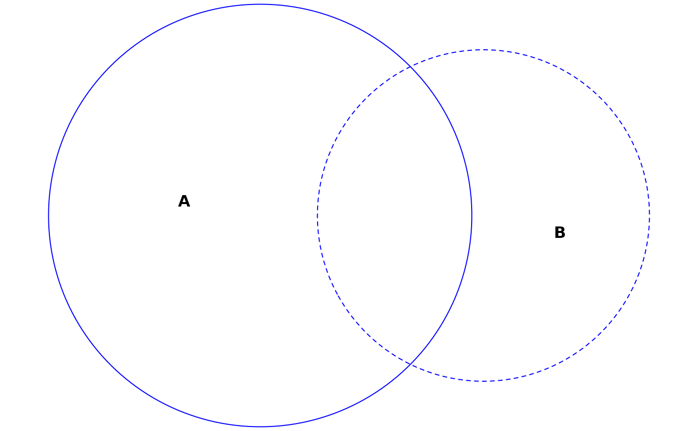

Plot diagrams fit with euler() and venn() using grid::Grid() graphics.
This
function sets up all the necessary plot parameters and computes
the geometry of the diagram. plot.eulergram(), meanwhile,
does the actual plotting of the diagram. Please see the Details section
to learn about the individual settings for each argument.
# S3 method for euler plot( x, fills = TRUE, edges = TRUE, legend = FALSE, labels = identical(legend, FALSE), quantities = FALSE, strips = NULL, main = NULL, n = 200L, adjust_labels = TRUE, ... ) # S3 method for venn plot( x, fills = TRUE, edges = TRUE, legend = FALSE, labels = identical(legend, FALSE), quantities = TRUE, strips = NULL, main = NULL, n = 200L, adjust_labels = TRUE, ... )
Arguments
| x | an object of class |
|---|---|
| fills | a logical, vector, or list of graphical parameters for the fills
in the diagram. Vectors are assumed to be colors for the fills.
See |
| edges | a logical, vector, or list of graphical parameters for the edges
in the diagram. Vectors are assumed to be colors for the edges.
See |
| legend | a logical scalar or list. If a list,
the item |
| labels | a logical, vector, or list. Vectors are assumed to be
text for the labels. See |
| quantities | a logical, vector, or list. Vectors are assumed to be
text for the quantities' labels, which by
default are the original values in the input to |
| strips | a list, ignored unless the |
| main | a title for the plot in the form of a
character, expression, list or something that can be
sensibly converted to a label via |
| n | number of vertices for the |
| adjust_labels | a logical. If |
| ... | parameters to update |
Value
Provides an object of class 'eulergram' , which is a
description of the diagram to be drawn. plot.eulergram() does the actual
drawing of the diagram.
Details
The only difference between plot.euler() and plot.venn() is that
quantities is set to TRUE by default in the latter and FALSE in
the former.
Most of the arguments to this function accept either a logical, a vector, or a list where
logical values set the attribute on or off,
vectors are shortcuts to commonly used options (see the individual parameters), and
lists enable fine-grained control, including graphical parameters as described in
grid::gpar()and control arguments that are specific to each argument.
The various grid::gpar() values that are available for each argument
are:
| fills | edges | labels | quantities | strips | legend | main | col | ||
| x | x | x | x | x | x | fill | x | ||
| alpha | x | x | x | x | x | ||||
| x | x | lty | x | ||||||
| lwd | x | lex | |||||||
| x | fontsize | x | |||||||
| x | x | x | x | cex | x | x | x | ||
| x | x | fontfamily | x | x | x | x | x | ||
| lineheight | x | x | x | x | x | font |
Defaults for these values, as well as other parameters of the plots, can
be set globally using eulerr_options().
If the diagram has been fit using the data.frame or matrix methods
and using the by argument, the plot area will be split into panels for
each combination of the one to two factors.
For users who are looking to plot their diagram using another package, all the necessary parameters can be collected if the result of this function is assigned to a variable (rather than printed to screen).
See also
euler(), plot.eulergram(), grid::gpar(),
grid::grid.polyline(), grid::grid.path(),
grid::grid.legend(), grid::grid.text()
Examples
fit <- euler(c("A" = 10, "B" = 5, "A&B" = 3)) # Customize colors, remove borders, bump alpha, color labels white plot(fit, fills = list(fill = c("red", "steelblue4"), alpha = 0.5), labels = list(col = "white", font = 4))# Add a custom legend and retain quantities plot(fit, quantities = TRUE, legend = list(labels = c("foo", "bar")))# Plot without fills and distinguish sets with border types instead plot(fit, fills = "transparent", lty = 1:2)# Save plot parameters to plot using some other method diagram_description <- plot(fit) # Plots using 'by' argument plot(euler(fruits[, 1:4], by = list(sex)), legend = TRUE)